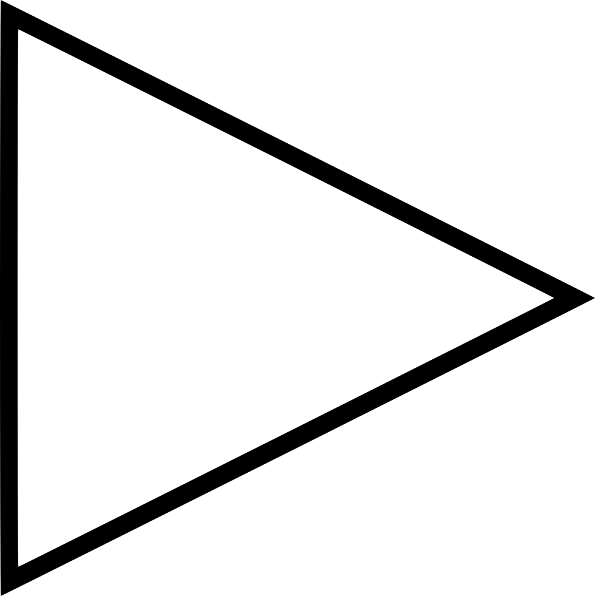
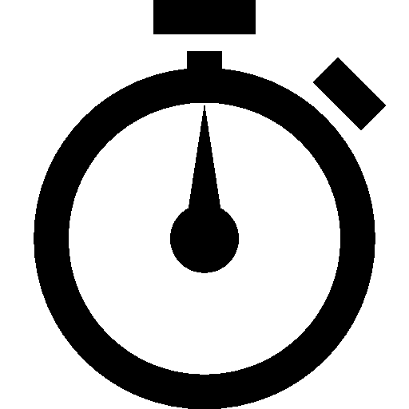

<section class="timer__body">
    <div class="timer__body-clock">
        <div class="clock">
            <div>{{stopWatchToShow.minutes}}</div>
            <div class="delimiters two-points">:</div>
            <div>{{stopWatchToShow.seconds}}</div>
            <div class="delimiters">.</div>
            <div>{{stopWatchToShow.milliseconds | slice:0:2}}</div>
        </div>
    </div>
    <div class="timer__body-panel">
        <button *ngIf="btnStatus === 'START'" (click)="start()" type="button"
                class="play-stop">
            
            <span>Start</span>
        </button>
        <button *ngIf="btnStatus === 'PAUSE'" (click)="pause()" type="button"
                class="play-stop">
            
            <span>Pause</span>
        </button>
        <button (click)="getLap()" type="button">
            
        </button>
        <button (click)="reset()" type="button"></button>
    </div>
    <app-stopwatch-item
            (removeLap)="removeLap($event)"
            [lapArr]="lapArr">
    </app-stopwatch-item>
</section>
